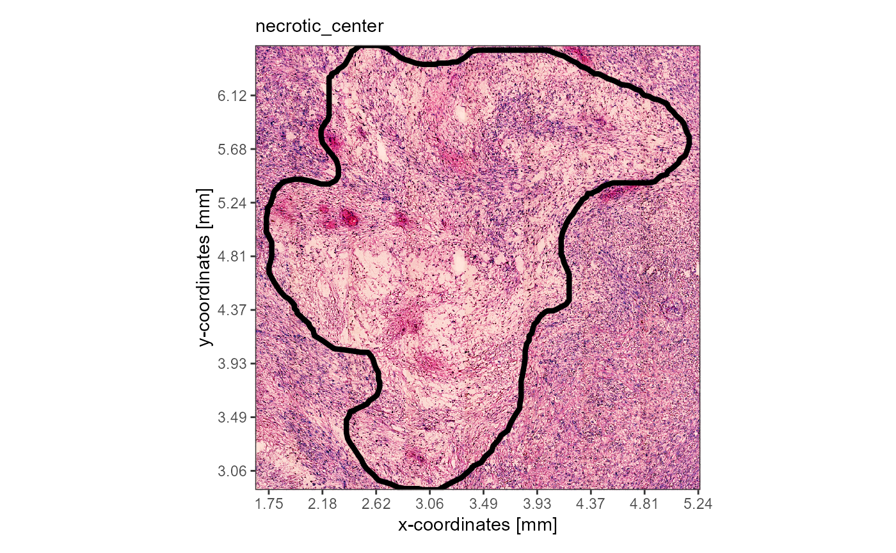

Spatial segmentation vs. Image annotations
Jan Kueckelhaus
2022-08-20
cc-spatial-segmentation-vs-image-annotations.Rmd2. Introduction & overview
SPATA2 allows to work closely with the underlying
histology of the tissue via spatial segmentation with the function
createSpatialSegmentation() and via image annotations with
the function createImageAnnotations(). In both cases areas
of interest are interactively encircled by drawing on the
image. How the annotated areas are processed and how both options can be
used in downstream analysis differs, however. This vignette explains the
difference between both options.
library(SPATA2)
library(SPATAData)
library(tidyverse)
object_t269 <- downloadSpataObject(sample = "269_T")
object_t313 <- downloadSpataObject(sample = "313_T")
plotImageGgplot(object = object_t269) +
labs(subtitle = "T269")
plotImageGgplot(object = object_t313) +
labs(subtitle = "T313")3. Spatial segmentation
In transcriptomic studies grouping variables are usually created by clustering. Spatial segmentation is used to create grouping variables that group the barcode-spots based on the area in which they are located.
# extract all grouping variables of the object
feature_df <-
getFeatureDf(object = object_t269) %>%
select(barcodes, where(is.factor))
# show results
feature_df## # A tibble: 3,213 x 2
## barcodes seurat_clusters
## <chr> <fct>
## 1 AAACAAGTATCTCCCA-1 2
## 2 AAACACCAATAACTGC-1 0
## 3 AAACAGAGCGACTCCT-1 5
## 4 AAACATTTCCCGGATT-1 5
## 5 AAACCCGAACGAAATC-1 2
## 6 AAACCGGGTAGGTACC-1 7
## 7 AAACCGTTCGTCCAGG-1 0
## 8 AAACCTAAGCAGCCGG-1 1
## 9 AAACCTCATGAAGTTG-1 7
## 10 AAACGAGACGGTTGAT-1 1
## # i 3,203 more rowsTo group barcode-spots based on the histology they cover
createSpatialSegmentations() allows to interactively
encircle the different regions on the image by drawing the respective
borders. The barcode-spots that fall into an encircled area can then be
labeled. The image below is a screenshot from the interface of
createSpatialSegmentation() where the left side of the
sample is about to be labeled tumor within the grouping
variable histology.
This way the surface of the tissue is segmented bit by bit. The
resulting grouping variables are stored in the feature data.frame.
Examples of segmentations are provided in the list
spatial_segmentations as part of the
SPATA2 package in form of data.frames that contain the
id variable barcodes and the grouping variable
histology.
# load example list
data("spatial_segmentations")
segmentation_df <- spatial_segmentations[["269_T"]]
# show results
segmentation_df## # A tibble: 3,213 x 2
## barcodes histology
## <chr> <fct>
## 1 AAACAAGTATCTCCCA-1 infiltrated
## 2 AAACACCAATAACTGC-1 tumor
## 3 AAACAGAGCGACTCCT-1 infiltrated
## 4 AAACATTTCCCGGATT-1 infiltrated
## 5 AAACCCGAACGAAATC-1 infiltrated
## 6 AAACCGGGTAGGTACC-1 tumor
## 7 AAACCGTTCGTCCAGG-1 tumor
## 8 AAACCTAAGCAGCCGG-1 infiltrated
## 9 AAACCTCATGAAGTTG-1 tumor
## 10 AAACGAGACGGTTGAT-1 infiltrated
## # i 3,203 more rowsVariables created with spatial segmentation are grouping variables and can be used like any other grouping variable.
# add example segmentation variable to features
object_t269 <-
addFeatures(
object = object_t269,
feature_df = segmentation_df
)
# show results
getFeatureDf(object_t269)## # A tibble: 3,213 x 6
## barcodes sample nCount_Spatial nFeature_Spatial seurat_clusters histology
## <chr> <chr> <dbl> <int> <fct> <fct>
## 1 AAACAAGTATC~ 269_T 2984 1760 2 infiltra~
## 2 AAACACCAATA~ 269_T 14812 5452 0 tumor
## 3 AAACAGAGCGA~ 269_T 2393 1516 5 infiltra~
## 4 AAACATTTCCC~ 269_T 4870 2575 5 infiltra~
## 5 AAACCCGAACG~ 269_T 5731 2781 2 infiltra~
## 6 AAACCGGGTAG~ 269_T 19525 6066 7 tumor
## 7 AAACCGTTCGT~ 269_T 11463 4523 0 tumor
## 8 AAACCTAAGCA~ 269_T 9221 3966 1 infiltra~
## 9 AAACCTCATGA~ 269_T 12689 4782 7 tumor
## 10 AAACGAGACGG~ 269_T 1168 889 1 infiltra~
## # i 3,203 more rows
# plot sgementation variable like any other variable
plotSurface(object = object_t269, color_by = "histology", pt_clrp = "npg")
plotSurface(object = object_t269, color_by = "seurat_clusters", pt_clrp = "lo")

This way, information that is given by the image can be integrated to find genes specific for histology using DEA.
# run DEA based on histology
object_t269 <- runDeAnalysis(object = object_t269, across = "histology")
plotDeaVolcano(
object = object_t269,
across = "histology",
use_pseudolog = TRUE
)
plotSurfaceComparison(
object = object_t269,
color_by = c("B2M", "MBP", "SNAP25"),
nrow = 1
)
4. Image annotations
Image annotations work more closely with the image itself. Instead of
being translated in grouping variables they are stored in S4 objects of
class ImageAnnotation. Thus, every single annotated area
stands for itself. One and the same area can be included in several
image annotations. The image below shows a screenshot from the interface
of the function createImageAnnotations(). It shows how the
annotation necrotic_center has already been drawn. And
regardless of the spatial extent of the image annotation
necrotic_center additional image annotations are drawn to
encircle vessels that might or might not lie inside of previously
annotated necrotic area. As every image annotation stands for itself
there is no conflict. Grouping variables would not allow that as every
barcode-spot (every x/y position) can only be labeled/annotated one time
within one and the same grouping variable.
Example image annotations are provided in the list
image_annotations as part of the SPATA2
package.
# load example list
data("image_annotations")
necrotic_img_ann <- image_annotations[["313_T"]][["necrotic_center"]]
class(necrotic_img_ann)## [1] "ImageAnnotation"
## attr(,"package")
## [1] "SPATA2"Use the function setImageAnnotation() to set the example
annotation or create your own with
createImageAnnotations().
object_t313 <-
setImageAnnotation(
object = object_t313,
img_ann = necrotic_img_ann,
overwrite = TRUE
)
# plot results
plotImageAnnotations(
object = object_t313,
ids = "necrotic_center",
expand = 0.2,
alpha = 0
)
necrotic_img_ann <-
getImageAnnotation(
object = object_t313,
id = "necrotic_center",
add_image = TRUE, # use the area and the image to create a cropped image
expand = 0 # manipulate the way how the image is cropped
)
# show results (S4 object)
necrotic_img_ann## An object of class 'ImageAnnotation' named 'necrotic_center'. Tags: necrotic.The S4 object contains a variety of information about the annotated
area. The respective areas can be extracted as a cropped images and can
be used as input for image processing, neural network analysis etc.
Depending on the input for argument expand the cropped
image section in slot @image either contains only what is
necessary to capture the annotated area or is expanded. For more
information on the S4 object ImageAnnotation read the
documentation via ?ImageAnnotation.
# plot the image (`expand` = 0)
plot(necrotic_img_ann@image)
# the extracted image
necrotic_img_ann@image## Image
## colorMode : Color
## storage.mode : double
## dim : 788 829 4
## frames.total : 4
## frames.render: 1
##
## imageData(object)[1:5,1:6,1]
## [,1] [,2] [,3] [,4] [,5] [,6]
## [1,] 0.6705882 0.8901961 0.8235294 0.4078431 0.7882353 0.8901961
## [2,] 0.8000000 0.8235294 0.6627451 0.6000000 0.7019608 0.9176471
## [3,] 0.7019608 0.8078431 0.6666667 0.5921569 0.7725490 0.9803922
## [4,] 0.8549020 0.8901961 0.6274510 0.2823529 0.6980392 0.9686275
## [5,] 0.9098039 0.8901961 0.6862745 0.0000000 0.3803922 0.9529412
# the center of the annotation
getImgAnnCenter(necrotic_img_ann)## x y
## 789.3377 1078.9569## $outer
## # A tibble: 10 x 2
## x y
## <dbl> <dbl>
## 1 512. 1378.
## 2 512. 1363.
## 3 510. 1354.
## 4 505. 1350.
## 5 505. 1347.
## 6 500. 1341.
## 7 497. 1334.
## 8 497. 1330.
## 9 497. 1323.
## 10 500. 1312.
# the barcodes that fall into the area
head(necrotic_img_ann@misc$barcodes, 10)## [1] "AAACAGGGTCTATATT-1" "AAACCGGGTAGGTACC-1" "AAACCGTTCGTCCAGG-1"
## [4] "AAACCTCATGAAGTTG-1" "AAACTTGCAAACGTAT-1" "AAAGGCTACGGACCAT-1"
## [7] "AAAGGCTCTCGCGCCG-1" "AAAGGGCAGCTTGAAT-1" "AAAGTAGCATTGCTCA-1"
## [10] "AAATCGTGTACCACAA-1"
# all slot names
slotNames(necrotic_img_ann)## [1] "area" "id" "image" "image_info" "info"
## [6] "misc" "tags"
# slot classes
map(
.x = slotNames(necrotic_img_ann),
.f = ~ slot(necrotic_img_ann, .x) %>% class()
) %>%
set_names(nm =slotNames(necrotic_img_ann))## $area
## [1] "list"
##
## $id
## [1] "character"
##
## $image
## [1] "Image"
## attr(,"package")
## [1] "EBImage"
##
## $image_info
## [1] "list"
##
## $info
## [1] "list"
##
## $misc
## [1] "list"
##
## $tags
## [1] "character"5. Converting image annotations to spatial segmentation
If you have annotated several structures and areas on the image via
image annotations and you want to create a spatial segmentation variable
from them you can use imageAnnotationToSegmentation().
object_t313 <-
imageAnnotationToSegmentation(
object = object_t313,
ids = "necrotic_center",
segmentation_name = "histology_ia", # name of the grouping variable
inside = "necrotic", # label the barcode spots inside the image annoation(s)
outside = "vivid", # label the barcode spots outsid of the image annotation(s)
overwrite = TRUE
)
plotSurface(object = object_t313, color_by = "histology_ia", pt_clrp = "npg")The binary segmentation/grouping variable is stored in the feature data as any other grouping variable.
getFeatureDf(object = object_t313) %>%
select(barcodes, histology_ia)## # A tibble: 3,517 x 2
## barcodes histology_ia
## <chr> <fct>
## 1 AAACAAGTATCTCCCA-1 vivid
## 2 AAACAATCTACTAGCA-1 vivid
## 3 AAACACCAATAACTGC-1 vivid
## 4 AAACAGAGCGACTCCT-1 vivid
## 5 AAACAGCTTTCAGAAG-1 vivid
## 6 AAACAGGGTCTATATT-1 necrotic
## 7 AAACATGGTGAGAGGA-1 vivid
## 8 AAACCCGAACGAAATC-1 vivid
## 9 AAACCGGGTAGGTACC-1 necrotic
## 10 AAACCGTTCGTCCAGG-1 necrotic
## # i 3,507 more rows